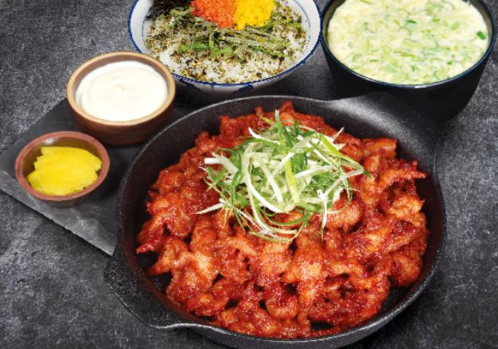

♥닭발은 맛있다♥
닭발요리의 종류
뼈닭발
무뼈닭발
국물닭발

무뼈닭발이란?
닭의 발에서 발톱과 뼈를 제거해 가공한 무뼈닭발로 요리한 닭발요리이다.
뼈 닭발보다 먹기 편하여 닭발 입문자들에게 제격이나,
무뼈닭발은 뼈가 없어 주먹밥과 곁들여 먹기 제격이나, 뼈가 있는 닭발을 더 선호하는 매니아층도 있다. 개인적으로 무뼈닭발 맛집은 "
웅이네 오돌뼈의 무뼈닭발
" 이라고 생각한다.